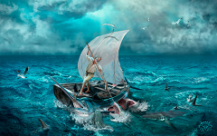
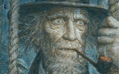

Эрнест Хэмингуэй "Старик и море"
Повесть американского писателя Эрнеста Хемингуэя, написанная в Бимини и вышедшая в 1952 году. Последнее известное художественное произведение Хемингуэя, опубликованное при его жизни. Рассказывает историю старика Сантьяго, кубинского рыбака о его борьбе в открытом море с гигантским марлином, который стал самой большой добычей в его жизни.
Рэй Брэдбери "451 градус по Фаренгейту"
Научно-фантастический роман-антиутопия Рэя Брэдбери, изданный в 1953 году. Роман описывает американское общество близкого будущего, в котором книги находятся под запретом; «пожарные», к числу которых принадлежит и главный герой Гай Монтэг, сжигают любые найденные книги. В ходе романа Монтэг разочаровывается в идеалах общества, частью которого он является, становится изгоем и присоединяется к небольшой подпольной группе маргиналов, сторонники которой заучивают тексты книг, чтобы спасти их для потомков. Название книги объясняется в эпиграфе: «451 градус по Фаренгейту - температура, при которой воспламеняется и горит бумага».
Антуан де Сент-Экзюпери "Маленький принц"
Аллегорическая повесть-сказка, наиболее известное произведение Антуана де Сент-Экзюпери. Рисунки в книге выполнены самим автором и не менее знамениты, чем сама книга. Важно, что это не иллюстрации, а органическая часть произведения в целом: сам автор и герои сказки всё время ссылаются на рисунки и даже спорят о них. Уникальные иллюстрации в «Маленьком принце» разрушают языковые барьеры, становятся частью универсального визуального лексикона, понятного каждому. «Ведь все взрослые сначала были детьми, только мало кто из них об этом помнит», — Антуан де Сент-Экзюпери, из посвящения к книге.
Герман Мелвилл "Моби Дик или Белый кит"
У мелвилловского шедевра сложная творческая история. Попытки восстановить ее, опираясь на переписку Мелвилла, дают нам картину приблизительную, неполную, хотя в общих чертах достоверную. Судя по всему, писатель замыслил создать еще один морской роман, посвященный на сей раз китобойному флоту. Он должен был как бы заключать морскую трилогию («Редберн», «Белый Бушлат», «Моби Дик»), охватывающую все виды мореплавания в Америке XIX столетия. По-видимому, Мелвилл хотел написать приключенческий роман о китобойном промысле, но вместе с тем книгу, материал которой допускал бы широчайшие обобщения экономического, социального, политического, философского характера, затрагивающие всю жизнь Соединенных Штатов, а может быть, и всего человечества. В этом первоначальном замысле уже была заложена неизбежность усиления символического начала в мелвилловском романтизме, которая реализовалась в окончательном тексте романа.